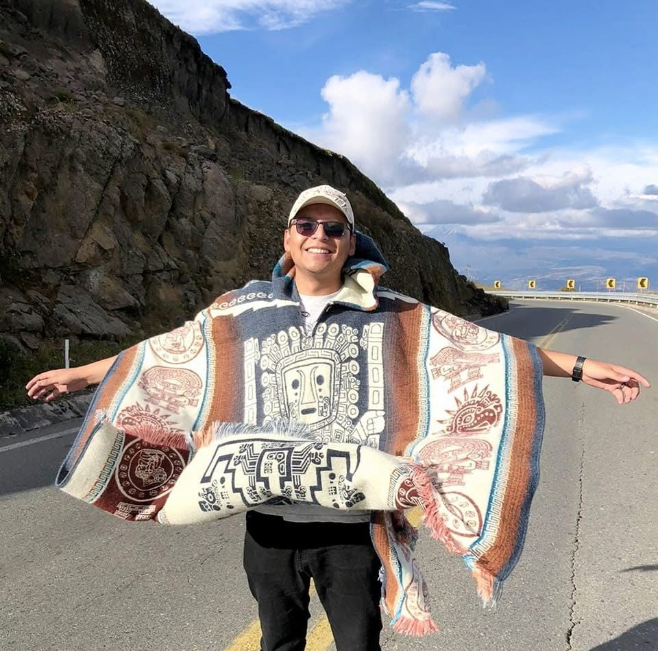

Why Ecuador?
This page connects the project to my story, Ecuador’s physical geography, and my faith.
This page connects the project to my story, Ecuador’s physical geography, and my faith.

I am Adrian Esteban Saltos Salazar. I was born in Quito, Ecuador, and I currently live in Salt Lake City. I have visited most of Ecuador, so this project connects my personal experiences with my interest in the country’s landscapes and Earth processes.
Alma 30:44 teaches that the Earth, its motion, and the planets testify of a Supreme Creator. When I observe Ecuador’s volcanoes, mountains, rivers, coastlines, and variety of life, I see order and interconnection in nature. These systems remind me that the Earth is more than a collection of separate places: it is a carefully balanced creation that supports life. Ecuador’s changing landscapes strengthen my gratitude for the Creator and encourage me to learn how to care for this world.